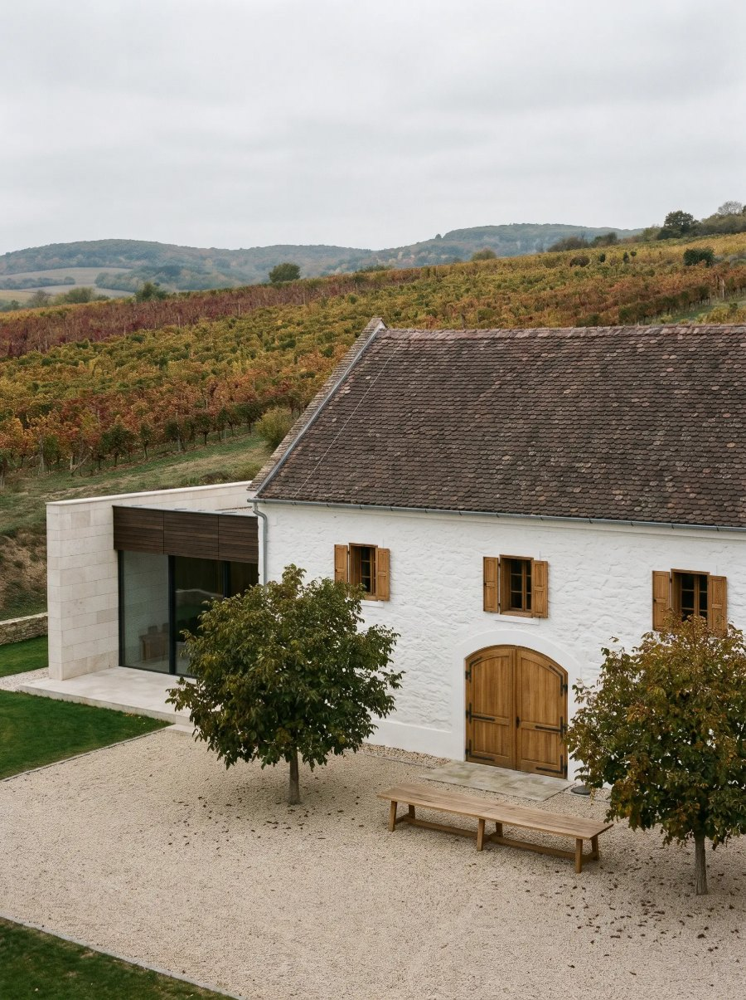
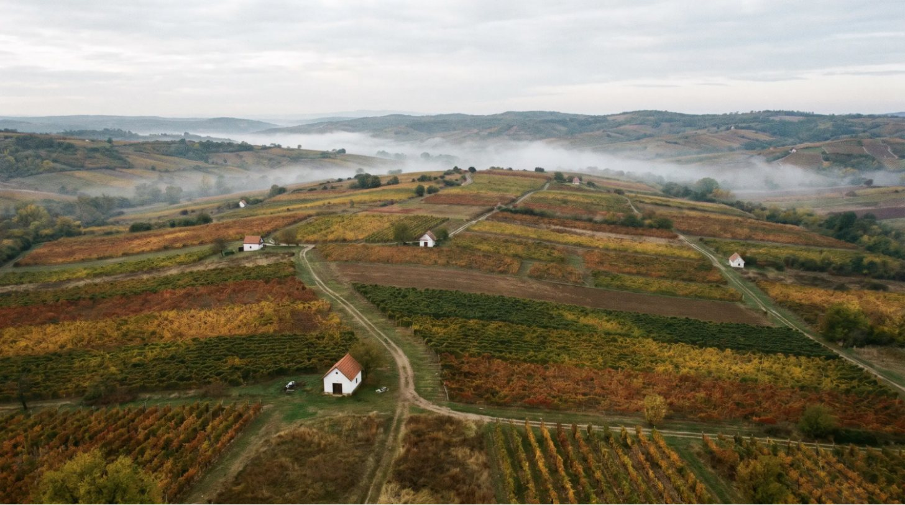
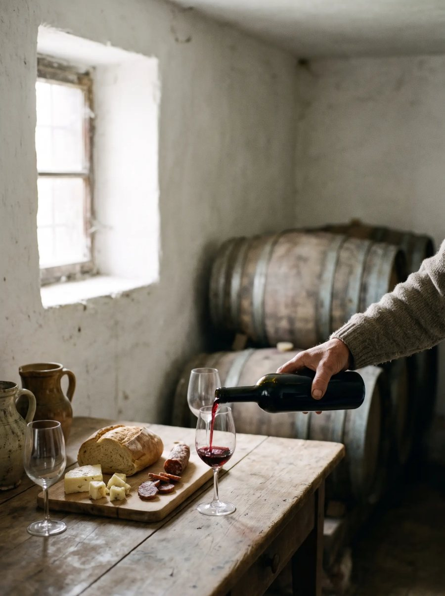

Szekszárdi borvidék · Iván-völgy
Tizenkét hektár, három dűlő, egy család.
Kadarkát, kékfrankost és bikavért készítünk a szekszárdi löszdombokon, 1994 óta. A borainkat közvetlenül tőlünk rendelheted, palackra vagy kartonra, és a pincében meg is kóstolhatod őket.


Boraink
Kóstoló a pincében
Csütörtöktől vasárnapig fogadunk vendégeket, kettőtől tizenhat főig. A kóstolót mindig a család egyik tagja vezeti, a pince asztalánál.

- A kóstoló díjából fejenként 2 000 Ft-ot beszámítunk, ha helyben bort is viszel.
- Fizetni a helyszínen lehet, kártyával, készpénzzel vagy SZÉP-kártyával.
- Lemondani az előző nap délig díjmentesen lehet.
Jöhetünk gyerekkel vagy kutyával?
Igen. A gyerekeknek szörpöt adunk, a kutyáknak vizet, az udvar zárt.
Mi lesz azzal, aki vezet?
A sofőr ingyen jön, szőlőlevet és kávét kap. Szállást a faluban három helyen tudunk ajánlani.
Adhatom ajándékba?
Igen, kóstolóutalványt az ajándékok között találsz. Egy évig érvényes.
Ajándék és cégeknek
Díszdobozba csomagolva, kísérőkártyával küldjük. Decemberben a 15-ig leadott rendelést visszük ki karácsonyig.
Díszcsomagok és utalvány
A dobozba kézzel írt kártya kerül, a szöveget a kosárban adhatod meg.
Céges ajándék
Tíz doboztól egyedi ajánlatot adunk, kérésre a cég logójával ellátott kísérőkártyával. Egy munkanapon belül válaszolunk.
Gyere el hozzánk
Bort nyitvatartási időben bejelentkezés nélkül is vihetsz. Kóstolóra kérj időpontot, hogy biztosan legyen, aki leül veled.
- Hétfő – szerdazárva
- Csütörtök12:00–18:00
- Péntek12:00–20:00
- Szombat10:00–20:00
- Vasárnap10:00–16:00
- Cím
- 7100 Szekszárd, Iván-völgy 14.
- Telefon
- +36 30 123 4567
- pince@kohalompince.example
- Megközelítés
- A belvárostól autóval tíz perc, az udvarban nyolc autó fér el. A rendelésedet itt is átveheted.
Havonta egy levél, nem több
Új évjáratok, nyitott pincék napja, és ha valamiből már csak pár karton maradt.